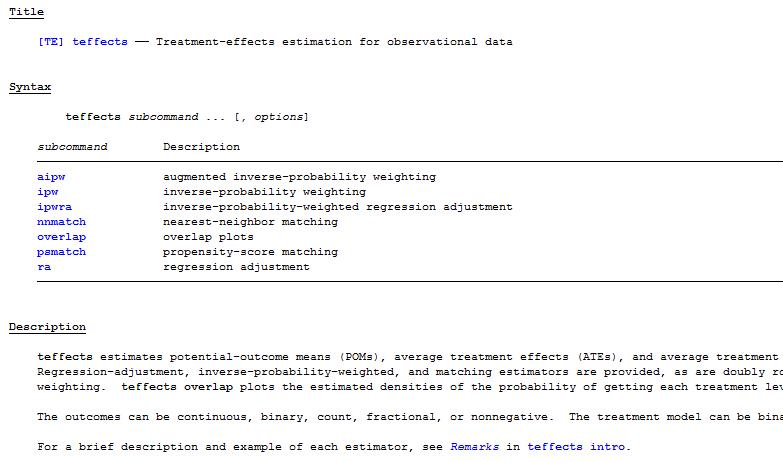

其他因果效应识别方法
匹配法
我们回忆一下在理想实验中，平均处理效应（ATE）等于服用新药之后的病情（\(E(Y_{1i}\big|D_i=1)\)）与没有服用新药病情（\(E(Y_{0i}\big|D_i=0)\)）之间的差异。即 \(ATE=E(Y_{1i}\big|D_i=1)-E(Y_{0i}\big|D_i=0)\)。
下面，我们来做一个简单的数学变换（不要看到“数学”两个字就怕，它们很多时候都是“纸老虎”，例如，此处只要学过中学的加减移项即可看懂）。我们将ATE计算式右边加上一项\(E(Y_{0i}\big|D_i=1)\)，又减去一项\(E(Y_{0i}\big|D_i=1)\): \[\begin{gather} ATE=E(Y_{1i}\big|D_i=1)-E(Y_{0i}\big|D_i=0)\nonumber\\ =[E(Y_{1i}\big|D_i=1)-E(Y_{0i}\big|D_i=1)]+[E(Y_{0i}\big|D_i=1)-E(Y_{0i}\big|D_i=0)] \end{gather}\]
(10)式显示，我们可以把ATE分解成两个部分（由中括号表示）：第一个部分是“参与者平均处理效应（ATT）”——项目实际参与者的平均处理效应；第二部分是选择偏差——假设参与者和未参与者的处理效应之差（实际上两类人都未参与项目）。
从政策制定者的角度来看，他们可能更关心ATT，因为这是政策或项目实施后的毛收益，我们只需要将这个毛收益与政策成本进行比较，就能判定这个政策是否值得。但从（10）式可知，ATE 与ATT 之间是存在一个选择偏差。（需要注意的是，这里的选择偏差与第五讲中的样本选择偏误有所不同。样本选择偏误是所选取的样本不是总体中的代表性样本所引起的偏误，这时通常不考虑政策或项目效应。
那么，如何解决这个问题呢？我们前面已经提到过，随机实验最大的优势在于其随机分配。那么，完全随机选择处理与否自然可以消除上述选择偏差。但实践中，很难执行这种随机实验。在这种情况下，我们有两种方法可以尽量消除选择偏误：
I. 匹配估计量
使用条件：假设个体根据可观测变量来选择是否参与项目
下面，我们用一个就业培训项目为例。在对这个项目进行效应评估时，我们除了能观测到人们是否参与了该项目\(D_i\)和项目实施前后的收入\(Y_i\)，我们还能观测到参与者的一些个体特征，例如年龄、受教育程度、肤色、婚否、性别等——协变量。
如果个体是否参与项目完全由某些协变量X决定的，那么，我们就可以利用匹配估计方法来估计出处理效应。
匹配估计的思想其实非常简单：实践中，个体i参与培训了（处理组），他就不可能又“穿越”回到过去不参加培训。这个时候，我们就需要在没有参加培训的那些人（控制组）找到某个或某些人j，那么怎么找呢？上面说过，参与项目\(D_i\)完全取决于可观测变量\(X_i\)，那么，自然就是找那些与参与者i有相近X的未参与人j。我们选择到的\(X_j\)与\(X_i\)越接近，j参与培训的概率就越接近i。那么，我们就可以把j的收入\(Y_j\)近似当作i在没有参与培训情形下的收入，然后把i的实际收入\(Y_i\)减去这个近似收入\(Y_j\)，即可得到培训的处理效应，即匹配估计量。
我们来看看表3中的一个简单匹配例子，参见陈强（2014）：541页。
| i | \(D_i\) | \(X_i\) | \(Y_i\) | 匹配对象 | \(\tilde{Y}_{0i}\) | \(\tilde{Y}_{1i}\) |
|---|---|---|---|---|---|---|
| 1 | 0 | 2 | 7 | 5 | 7 | 8 |
| 2 | 0 | 4 | 8 | 4,6 | 8 | 7.5 |
| 3 | 0 | 5 | 6 | 4,6 | 6 | 7.5 |
| 4 | 1 | 3 | 9 | 1,2 | 7.5 | 9 |
| 5 | 1 | 2 | 8 | 1 | 7 | 8 |
| 6 | 1 | 3 | 6 | 1,2 | 7.5 | 6 |
| 7 | 1 | 1 | 5 | 1 | 7 | 5 |
根据匹配估计的思想，是否参加项目D只依赖于X，而且我们要从未参加组（D=0）里为参加者（D=1）找到X相近的那些人，例如，我们要从1-3中为4-7找到X相近的人，第7个人的X=1，而1-3中X最接近1的是第一个人的X=2，因此，与第7个人匹配的对象就是第1个人。那么，我们就应该把第1个人的Y=7当做第7个人没有参加项时的\(\tilde{Y}=7\)，而实际参与项目的Y=5，因此，该项目的效应就是\(5-7=-2\)。其他人也这样匹配。
两个技术细节需要特别注意：
第一，在寻找匹配对象时是否允许匹配对象放回。放回就是说，当表3中的第4个人与第2个人匹配了，但是在对第6个人进行匹配时，第2个人仍然在备选之列，也就是第2个人匹配之后又放回备选对象行列，可以进行下一次匹配。而不放回，就意味着2与4匹配之后，2就不能进行下次匹配，那么6只能与1进行匹配。
第二，是否允许匹配对象并列。也就是说，4与1、2的X都比较接近，那么，在允许并列的情形下，我们会将1、2的Y的均值作为4的\(\tilde{Y}\)。如果不允许并列，软件就会根据数据排列的顺序来选择匹配对象及其\(\tilde{Y}\)，例如，在不允许并列时，根据表3数据的排列顺序，与4匹配的就是1，那么\(Y_1\)就会作为4的\(\tilde{Y}_4\)。
一般来说，匹配估计量会存在偏差，因为\(X_i\)不可能与\(X_j\)完全相同。那么，在非精确匹配的情形下：（1）一对一匹配，偏差较大，方差较小；（2）一对多匹配，偏差较小，方差加大。经验法则：最好进行一对四匹配，这样能使均方误差(MSE)最小。
上面就是匹配估计法的最基本思想：就是找到两组中X最接近的对象进行匹配。虽然原理很简单，但是实际操作起来可就难了。因为在实践中，我们通常不会像表3那样，D依赖的X只有单一变量，而是X中会包含很多个变量。也就是说，我们要根据多个协变量同时进行比较，例如对不同人的年龄、受教育程度、性别等同时进行比较，这个时候就可能会遇到，两个人年龄相仿，但受教育程度差距很大，受教育程度相同，但年龄差距有很大，这个时候我们要这么比较这匹配对象是否接近呢？
这个时候，我们就需要拿出一种有效的武器——倾向得分匹配（PSM）。
那么，PSM的思想是什么呢？说简单也简单，说难也难！
简单是因为，我们就是要找到一个批判不同对象之间是否相似，但在多个X情况下，我们无从下手。那么，我们想法办把多个X转换成一个指标，即通过某种函数\(f(X)\)，把多维变量变成一维变量，这个一维变量就是倾向得分（PS）。然后，我们就可以根据这个倾向得分来进行上述匹配。
难是因为，这个转换函数\(f(X)\)到底是什么？这个问题我们就不展开了。有兴趣者可自行查阅相关资料。
PSM计算处理效应的步骤：
（1）选择协变量\(X\)。尽量将影响D和Y的相关变量都包括在协变量中。如果协变量选择不当或太少，就会引起效应估计偏误；
（2）计算倾向得分，一般用logit回归；
（3）进行倾向得分匹配。如果倾向得分估计较为精确，那么，X在匹配后的处理组和控制组之间均匀分布，这就是数据平衡。那么我们检验得分是否准确就需要计算X 中每个分量的“标准化偏差”。经验法则：一般来说，标准化偏差不能超过10%，如果超过10%，我们就要重新返回第（2）步重新计算，甚至第（1）步重新选择匹配协变量，或者改变匹配方法。
（4）根据匹配后的样本计算处理效应。
第三步中，得分匹配效果不好，可能要改变匹配方法：一、k邻近匹配；二、卡尺匹配或半径匹配；三、卡尺内最近邻匹配；四、核匹配；五、局部线性回归匹配；六、样条匹配。在实践中，并没有明确准则来限定使用哪种匹配方法。但有一些经验法则可作为参考：
（1）如果控制组个体不多，则应该选择又放回匹配；
（2）如果控制组有较多个体，则应该选择核匹配；
（3）最常用的方法：尝试不同的匹配方法，然后比较它们的结果，结果相似说明很稳健。结果差异较大，就要去深挖其中的原因。
PSM的局限性：
（1）大样本；
（2）要求处理组和控制组有较大的共同取值范围；
（3）只控制了可观测的变量，如果存在不可观测的协变量，则会引起“隐性偏差”。
II. DID-PSM估计量
使用条件：假设个体根据不可观测变量来选择是否参与项目
上面提到，如果存在根据不可观测变量进行选择时，会引起“隐性偏差”。而消除这种影响的方法很多，其中之一就是利用面板数据，且结合DID-PSM来计算处理效应。DID和PSM原理我们在上面均详细讲过，因此，下面直接给出其stata操作。
除了DID-PSM之外，断点回归和工具变量法都可以尽量消除“隐性偏差”。
PSM的Stata应用演示
下面，我们用Dehejia and Wahba（1999）职业培训的数据来演示stata的匹配操作。
从stata13.0开始，就提供匹配命令\(teffects\)命令，我们在stata中输入“help teffects”就可以看到命令描述：

下面，我们采用1:1最近邻匹配，估计培训对个人收入的效应。输入如下命令：